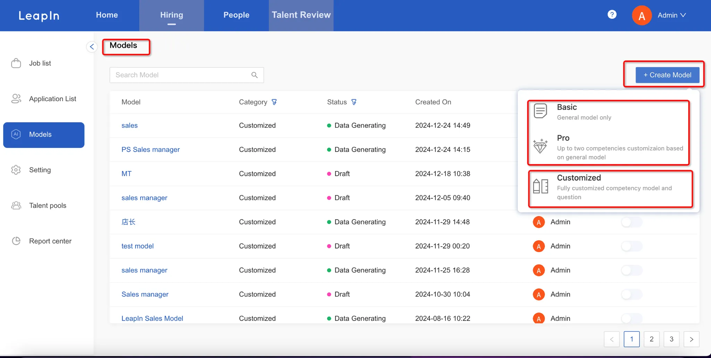
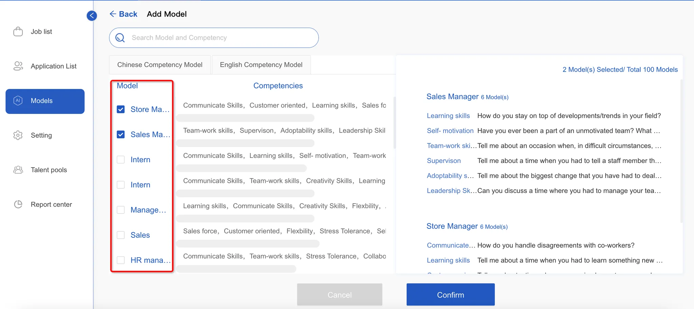
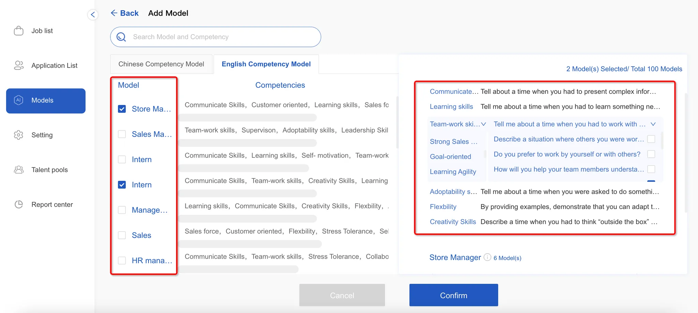
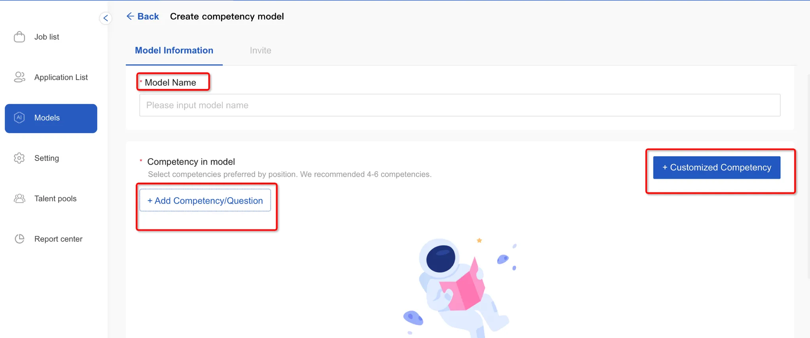
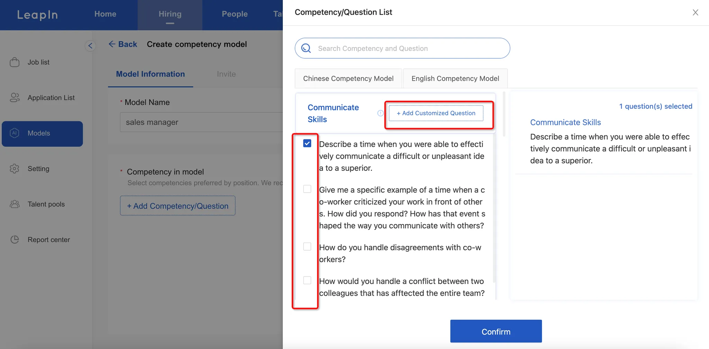
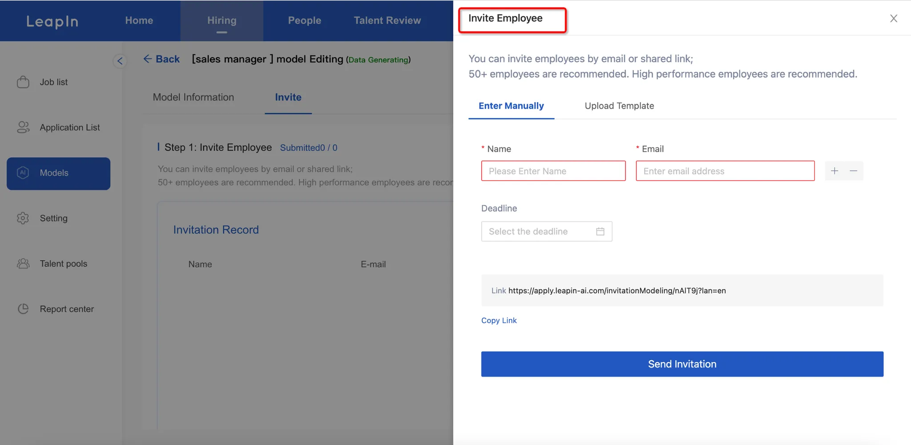
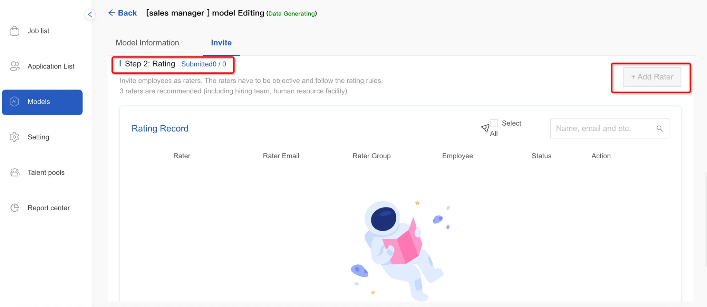

To get started, head to the Model Management menu and click the "Add New Model" button in the upper right.
There are three ways to create a model:

Click on the Model Management menu, enter the model list, and click the [Add New Model] button in the top right corner

Select a model, in the model details you can select and modify capabilities and questions, after editing click confirm to directly publish the model.

Select a model, enter the model name, add/customize capabilities and questions, recommended 4-6 questions, click save.


Once your model is set up, you can invite participants by either manually entering their information or uploading a template. They'll receive an email invitation to record a video for the modeling process. You can also share the invitation link directly in group chats.

For the evaluation phase, simply add scorers to your different assessment groups. After all scoring is complete, just hit submit to begin the model training process.
